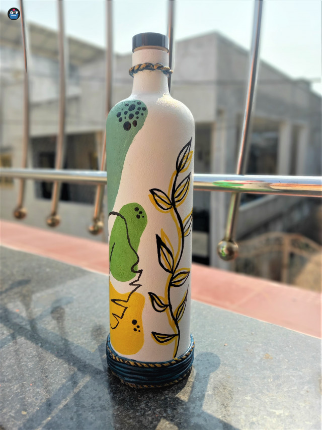

Case Study Between Google Lens and MobileNet
Google lens  vs MobileNet
vs MobileNet 
| Test Image:  | Output of GoogleLens is Waterbottle |
Output of MobileNet is Waterbottle |
| Test Image: | Output of GoogleLens is Controller |
Output of MobileNet is Controller |